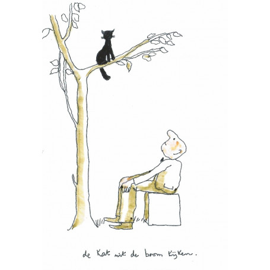

De Kat uit de Boom kijken
"De kat uit de boom kijken" wordt gebruikt om aan te geven dat iemand terughoudend is of twijfelt voordat hij deelneemt aan een gesprek, activiteit of besluitvormingsproces. Het kan wijzen op voorzichtigheid, afwachtendheid of het verlangen om meer informatie te verkrijgen voordat men een standpunt inneemt. Het spreekwoord suggereert ook dat het soms verstandig kan zijn om even afstand te nemen en de situatie te observeren alvorens actie te ondernemen.
Oorsprong
De oorsprong van het spreekwoord is niet exact bekend, maar het gebruik ervan wordt vaak toegeschreven aan de observatie van katten in bomen. Katten staan bekend om hun nieuwsgierigheid en voorzichtigheid, vooral wanneer ze zich in een onbekende omgeving bevinden. Het idee achter het spreekwoord is dat de kat eerst de situatie wil beoordelen voordat hij besluit om naar beneden te komen.
Gebruik
De kat uit de boom kijken wordt vaak gebruikt in informele gesprekken en heeft zijn weg gevonden in dagelijkse communicatie. Het spreekwoord wordt gebruikt om begrip te tonen voor iemand die niet direct betrokken wil zijn of die wat terughoudend is in een bepaalde situatie.
Voorbeelden
- Jan keek de kat uit de boom voordat hij besloot deel te nemen aan het project.
- Anna wachtte de kat uit de boom tijdens de vergadering, totdat ze zich comfortabel genoeg voelde om haar mening te delen
Vertalingen
Hoewel het spreekwoord specifiek is voor de Nederlandse taal, zijn er vergelijkbare uitdrukkingen in andere talen. Bijvoorbeeld, in het Engels wordt soms gezegd: to play it safe (het veilig spelen) of to wait and see (afwachten).